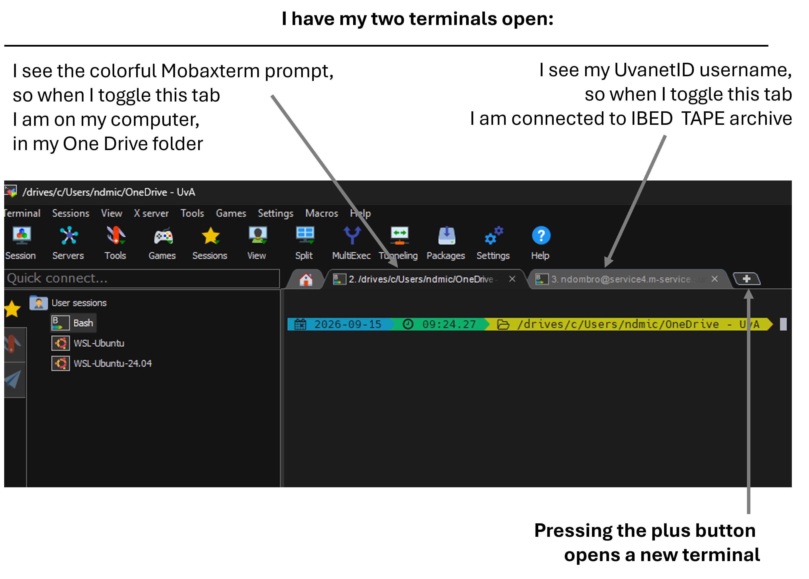
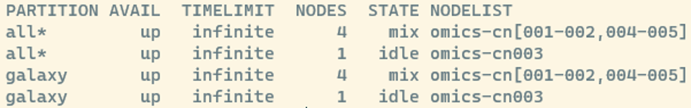

ssh username@serverUsing an HPC
Now that you are more familiar with the command line, we will learn how to work on the UvA Crunchomics HPC. On this page, you will:
- Connect to Crunchomics and prepare your account
- Transfer the sequencing data from your own computer to Crunchomics
- Run your first analyses on the compute nodes with SLURM:
srunfor short, interactive analysessbatchfor longer running, more resource intensive analyses
- Install your own software with conda
For people following this tutorial outside of UvA:
- If you have access to an HPC that uses SLURM, you can still follow the tutorial
- If you do not have access to an HPC but are interested in how to install and run software that can be used to analyse sequencing data, you still might want to check out the steps below. The dataset is very small and all analyses can be run on a desktop computer
Connecting to the HPC
ssh: Connecting to a server
SSH (Secure Shell) is a network protocol that allows you to securely connect to a remote computer, such as the Crunchomics HPC. The general command looks like this:
Here:
usernameis your account name on the HPC. For Crunchomics, this is your UvAnetIDserveris the address of the HPC you want to connect to. For Crunchomics, this isomics-h0.science.uva.nl
To log in to Crunchomics, use the following command and enter your UvA password when you are asked for it. Remember that nothing appears on the screen while you type your password:
# Log in to Crunchomics (replace uvanetid with your own UvAnetID)
ssh uvanetid@omics-h0.science.uva.nlYou did the same during the Before you start checks. After logging in, the prompt changes: it now shows your UvAnetID and omics-h0. Every command you type now runs on Crunchomics, not on your own computer.
Important
Important tips for connecting:
- If you want to log in to Crunchomics while working from UvA, use the eduroam network, not the open Amsterdam Science Park network
- If you are connecting from outside UvA, you must be connected to the VPN. Contact ICT if you have not set it up or encounter issues
- Always double-check your username and the server address to avoid login errors
TipTip: Viewing graphical output with ssh -X
Some programs on the HPC can open a window, for example to show a plot or a PDF. To see such windows on your own computer, log in with the -X option:
ssh -X uvanetid@omics-h0.science.uva.nl-X enables what is called X11 forwarding: the HPC sends the graphical output to your computer. In this tutorial we don’t need this, because we copy the results to our own computer instead.
TipTip: Warning about a changed host key
The first time you connect, your computer stores a “fingerprint” of Crunchomics, the so-called host key. After maintenance of Crunchomics, this key can change. Then ssh refuses to connect and shows a warning like REMOTE HOST IDENTIFICATION HAS CHANGED!.
If you know that Crunchomics had maintenance, you can remove the old key from your computer with the command below. Run it on your own computer, not on the HPC. Then log in again and type yes when you are asked whether you want to continue connecting.
# Remove the stored host key for Crunchomics from your own computer
ssh-keygen -R "omics-h0.science.uva.nl"If you are unsure why the key changed, ask before you remove it.
Crunchomics: Preparing your account
If this is your first time using Crunchomics, you need to run a small bash script to set up your account. Ignore this section if you have done this before. The script:
- Adds
/zfs/omics/software/binto your PATH. The PATH is the list of folders in which bash looks for programs. With this change, bash can find the software that is already installed on Crunchomics - Sets up a Python 3 environment with some useful Python packages
- Creates a link called
personalin your home directory. This link leads to your personal directory, which has 500 GB of space. Your home directory itself only has 25 GB
To set up your account, run the following commands:
# First, orient yourself
pwd
ls -lh
# Run the Crunchomics installation script
/zfs/omics/software/script/omics_install_script
# Check what changed
# You should now see the personal folder inside your home directory
ls -lhPreparing your working directory
Next, let’s make a project folder for our analyses. Always make project folders inside your personal directory, since it has much more space than your home directory. We give the folder the same name as on our own computer, data_analysis:
# Go into the personal folder
cd personal
# Make a new project folder and go into it
mkdir data_analysis
cd data_analysis
# Check that you are in the right folder
pwdYou now have a clean workspace for all the analyses that you will run on Crunchomics. As on your own computer, it is good practice to keep your raw data, results and scripts in separate folders.
scp: Transferring data to and from a server
Next, we want to transfer the data folder with our sequencing data from our own computer to the new project folder on Crunchomics. We do this with scp (Secure Copy Protocol), which securely copies files and folders between your computer and a remote server.
The basic syntax is:
scp [options] SOURCE DESTINATION- A location on a server is written as
username@server:path_on_the_server
When transferring data, you must run scp in a terminal on your own computer, not in a terminal that is logged in to the HPC. To keep yourself organized, it is useful to have two terminals open: one on your own computer and one on Crunchomics. In MobaXterm, you can open a second terminal in a new tab:

To copy the entire data folder into your Crunchomics project folder, use:
# Run this in the terminal on your OWN computer (not on the HPC),
# from inside your local data_analysis folder (where the data folder is)
# Replace both instances of 'username' with your UvAnetID
scp -r data username@omics-h0.science.uva.nl:/home/username/personal/data_analysisHere:
-rcopies a folder together with everything inside it (recursive). Without-r,scponly copies single filesdatais the source: the folder on your own computerusername@omics-h0.science.uva.nl:/home/username/personal/data_analysisis the destination: your project folder on Crunchomics
Now switch to the terminal that is logged in to Crunchomics and check that the files arrived:
# Run this on Crunchomics, inside the data_analysis folder
ls -l data/seq_project/*/*fastq.gz
# We expect 8 files (4 samples, R1 and R2 each)
ls data/seq_project/*/*fastq.gz | wc -l
TipTip: Moving data from the HPC to your own computer
You can also copy results from the HPC to your own computer. For this, you switch source and destination. For example, to copy a single sequencing file from Crunchomics:
- We do not need
-r, since we only copy a single file - We again run this command in a terminal on our own computer, not on the HPC
- The
.at the end means “copy into the folder I am in right now” on your own computer. If you want to copy the file elsewhere, replace.with a path
scp username@omics-h0.science.uva.nl:/home/username/personal/data_analysis/data/seq_project/barcode001_User1_ITS_1_L001/Sample-DUMMY1_R1.fastq.gz .
TipTip: Moving files with wildcards
We can also copy several files at once with a wildcard. Then scp copies only the files, not the folders they are in.
# On Crunchomics: make a folder to copy the data into
mkdir transfer_test
# On your own computer: copy all fastq.gz files to the new folder on Crunchomics
scp data/seq_project/barcode00*/*fastq.gz username@omics-h0.science.uva.nl:/home/username/personal/data_analysis/transfer_test
# On Crunchomics: view the data
# See how the folder structure is different compared to our first example?
ls -l transfer_test/*Notice for Mac users:
For Mac users who work with the zsh shell, the command above might not work, and you might get an error like “file not found”, “no matches found” or something similar. zsh handles wildcards slightly differently than bash. If you see this error and you are sure that the files exist, try this version of the command:
\scp data/seq_project/barcode00*/*fastq.gz username@omics-h0.science.uva.nl:/home/username/personal/data_analysis/transfer_testIf that does not work, these are some other things to try (different zsh setups might need slightly different solutions):
noglob scp data/seq_project/barcode00*/*fastq.gz username@omics-h0.science.uva.nl:/home/username/personal/data_analysis/transfer_test
scp 'data/seq_project/barcode00*/*fastq.gz' username@omics-h0.science.uva.nl:/home/username/personal/data_analysis/transfer_test
TipTip: Moving files using the FileZilla GUI
scp takes some getting used to, and there are several programs with a graphical user interface that do the same thing. Here, we look at FileZilla, which works on Windows, Mac and Linux.
To use FileZilla, do the following:
- Download the FileZilla Client here. The free version is all we need.
- Follow the installation instructions
- Click the FileZilla app to start it
- Add your UvA user credentials:
- Enter
omics-h0.science.uva.nlin host - Enter your UvAnetID in user
- Enter your UvA password
- Port should be 22 to open an SFTP connection
- Enter
- Trust the host
- You land in your home directory (on the right hand side)
- You can copy data by dragging and dropping
Submitting jobs with SLURM
Login node and compute nodes
In the HPC introduction, you learned that an HPC has two main parts:
- The login node: where you log in and do light work, such as moving files, editing scripts or preparing jobs
- The compute nodes: where the actual analyses run. These nodes have more CPUs and memory
We do not run big analyses on the login node. Instead, we send them to the compute nodes as jobs. A job is a task that you ask the HPC to run, together with the resources it needs. The jobs are managed by SLURM, a workload manager that decides when, where and how your jobs run based on the available resources.
sinfo: Get information about the cluster
When you start on a new HPC, it is useful to know which compute nodes exist and how busy they are. This helps you to choose how many resources to request, so that your job runs efficiently but also starts in time.
To get a list of the compute nodes, type:
sinfoWe will see something like this:

Here, the different columns are:
- PARTITION: the queues that are available. Crunchomics has only a few partitions, and you do not need to choose one. Other systems use partitions to group nodes with different hardware or a different maximum run time
- STATE: tells you whether a node is busy or not:
- mix: some of the resources are in use
- idle: the node is free
- drain: unavailable, because the system administrator asked for it
- alloc: all resources are in use
- down: unavailable
- NODES: the number of nodes in each state
- NODELIST: the names of the compute nodes
squeue: View the jobs in the queue
The command below shows you which jobs are currently running or waiting in the queue:
squeueThis shows all jobs on the system and might look something like this:

Some useful columns to know:
- JOBID: a unique number for each job. You can use it to check on or cancel a job later
- ST: the current state of the job, e.g. R = running, PD = pending (waiting). A full list of SLURM job state codes can be found here
Once you have submitted a job, it appears in this list as well. To see only your own jobs, add the -u option followed by your user name. $USER is a shortcut that bash replaces with your own user name:
squeue -u $USERsrun: Submitting a job interactively
Now let’s run our first job on a compute node. There are two main ways to submit jobs: srun and sbatch. We start with srun, which you typically use when:
- You want to run tasks interactively and see the output directly on your screen
- You are testing or debugging your commands before writing a job script
- You have short jobs (usually less than a few hours)
Let’s start with a very simple example to see how srun works:
srun --cpus-per-task=1 --mem=1G --time=00:10:00 echo "Hello world"Here’s what each part means:
srun: tells SLURM that you want to run something on a compute node, with the resources that follow--cpus-per-task=1: request 1 CPU--mem=1G: request 1 GB of memory--time=00:10:00: set a maximum run time of 10 minutes (hours:minutes:seconds). If the job takes longer, SLURM stops itecho "Hello world": the actual command to run
So everything between srun and the actual command tells SLURM which resources your job needs on the compute node. The job runs so fast that you won’t see it in squeue. But congratulations, you just communicated with a compute node for the first time.
Important
Jobs started with srun stop if you lose the connection to the HPC, for example when you close your laptop. For longer jobs, use sbatch (see below).
TipTip: Other srun options you might see
In examples online, you will often see two more options:
--nodes=1: the number of nodes (i.e. separate computers) your job runs on. This does not reserve the whole node for you, jobs of other people can still run on the same node. The CPUs you request with--cpus-per-taskalways come from a single node, so for the jobs in this tutorial you can leave this option out. If you ever really need a whole node for yourself, the option for that is--exclusive, but on a shared system like Crunchomics you rarely want this.--ntasks=1: the number of tasks to run. The default is 1, which is what we need in this tutorial
Run FastQC with srun
Next, let’s use srun for something more useful. FastQC is a quality control tool for sequencing data that is already installed on Crunchomics. We use it to look more closely at the quality of the sequencing data that we just copied to Crunchomics.
Whenever you use a tool for the first time, check its help page (e.g. fastqc -h) to see all available options, or look online for a manual.
# Make a results folder with a fastqc folder inside
mkdir -p results/fastqc
# Run FastQC on all fastq.gz files with srun
srun --cpus-per-task=1 --mem=5G --time=00:30:00 fastqc data/seq_project/*/*gz -o results/fastqc --threads 1
# Check the output: we expect one HTML report (and one zip file) per fastq.gz file
ls -l results/fastqcHere:
fastqc data/seq_project/*/*gz: run FastQC on all files in theseq_projectfolders that end withgz-o results/fastqc: write the output into theresults/fastqcfolder--threads 1: let FastQC use 1 CPU (in our case, thread and CPU mean the same)- Important: always make sure that the number of CPUs you request from SLURM matches the number of CPUs (threads) the software uses. If the tool uses more than you requested, it competes with itself for CPUs. If you request more than the tool uses, the extra CPUs sit idle while others could use them
Since we work with little data, this runs fast despite only using 1 CPU. If you are logged in to Crunchomics in a second terminal and run squeue while FastQC is running, you should see your job (in the example below, the job is named after the software and got the job ID 746):

QuestionExercise
The FastQC reports are HTML files, which are easiest to view in the internet browser of your own computer.
- Use
scpto copy the HTML files generated by FastQC from Crunchomics into theresults/fastqcfolder of thedata_analysisfolder on your own computer - Open the folder in your file browser and open one of the HTML files
AnswerClick me to see an answer
# Run all of this in the terminal on your OWN computer,
# from inside your local data_analysis folder
# Question 1:
# Make the folder for the reports
mkdir -p results/fastqc
# Copy all HTML reports
# The quotes make sure that the wildcard is used on Crunchomics, not on your own computer
scp 'username@omics-h0.science.uva.nl:/home/username/personal/data_analysis/results/fastqc/*html' results/fastqc/
# Check that the 8 reports arrived
ls -l results/fastqc
# Question 2:
# Open the folder in your file browser
cd results/fastqc
explorer.exe . # Windows (MobaXterm or WSL2)
open . # MacDouble-click on one of the HTML files to open it in your browser. If you want to know more about how to interpret the output, visit the FastQC website, which gives examples of good and bad reports.
srun --pty bash: Working interactively on a compute node
Sometimes you want to try out several commands after each other on a compute node, for example to test a new tool. Instead of putting srun in front of every command, you can open an interactive session: a shell that runs on a compute node.
# Open an interactive bash shell on a compute node for at most 1 hour
srun --cpus-per-task=1 --mem=5G --time=01:00:00 --pty bash -iHere:
--pty bash -istarts an interactive bash shell on the compute node, instead of running a single command
Your prompt changes: it now shows the name of the compute node instead of omics-h0. You can check where you are with the command hostname, which prints the name of the computer you are working on. Every command you type now runs on the compute node, with the resources you requested.
When you are done, leave the compute node and go back to the login node:
exit
Important
Always exit an interactive session when you are done. As long as the session is open, the CPUs and memory you requested stay reserved for you, even if you don’t use them, and other people have to wait for them.
sbatch: Submitting a long-running job
While srun is great for quick, interactive runs, most analyses on an HPC are submitted with sbatch. With sbatch, you write your commands into a job script, a text file with all the commands and the resources your job needs. SLURM then runs the script in the background, even after you log out.
Use sbatch when:
- You have long or resource-intensive analyses
- You want jobs to run unattended, without your direct supervision
- You want to run several jobs after each other or at the same time
Step 1: Create folders for scripts and logs
We keep our project tidy by making separate folders for our job scripts and for the log files that SLURM writes:
mkdir -p scripts logs
# Check that the folders are there
ls -lStep 2: Write a job script
We run FastQC again, but this time with sbatch instead of srun, so that you can directly compare the two.
Use nano to create a script file:
nano scripts/run_fastqc.shThen add the following content:
#!/bin/bash
#SBATCH --job-name=fastqc
#SBATCH --output=logs/fastqc_%j.out
#SBATCH --error=logs/fastqc_%j.err
#SBATCH --cpus-per-task=1
#SBATCH --mem=5G
#SBATCH --time=01:00:00
echo "FastQC job started on:"
date
fastqc data/seq_project/*/*gz -o results/fastqc --threads 1
echo "FastQC job finished on:"
dateSave and exit:
- Press
Ctrl+Xto exit, thenYto confirm that you want to save the file, then Enter to keep the file name
Notice how the fastqc command looks exactly the same as when we used srun? The main difference between srun and sbatch is how we package the instructions for the compute node.
Step 3: Understanding your job script
In the job script above:
#!/bin/bash: this so-called shebang line tells the system to run the script with bash. Add it at the very top of every job script#SBATCH --...: these lines tell SLURM which resources the job needs and how to name things. They are the same options that you used withsrun, plus three new ones:--job-name: a name for your job, which you see insqueue--output: the file in which SLURM stores everything the job prints to the screen (the standard output)--error: the file in which SLURM stores error messages (the standard error)%jin the file names is replaced by the job ID. This way, every job gets its own log files and nothing is overwritten
echoanddate: print messages with the time, so that you can follow the progress of the job in the log filefastqc ...: the actual analysis that runs on the compute node
Notice that the #SBATCH lines start with #? For bash, these lines are comments. Only SLURM reads them.
Step 4: Submit and monitor your job
# Submit the job script to SLURM
sbatch scripts/run_fastqc.sh
# Check the job status (the job may run too fast to appear)
squeue -u $USER
# Once the job is finished and no longer in the list, check the outputs
ls -l logs
ls -l results/fastqcWhen the job is submitted, you see something like Submitted batch job 754, and two new log files appear in your logs folder:
fastqc_<jobID>.out: the standard output, e.g. the messages fromechoanddatefastqc_<jobID>.err: the error log. Check this file if your job fails
Have a look at both log files, for example with cat logs/fastqc_*.out. Do you see the messages from echo and date? Some programs also write normal progress messages into the error log, so a .err file with content does not always mean that something went wrong.
Since we gave FastQC the same output folder, the reports from the srun run were replaced by the new ones. Here that is fine, because the input is the same.
TipTip: Debugging your first sbatch jobs
If your job fails:
- Check the
.errand.outfiles in thelogsfolder. These files usually tell you what went wrong - Check that your input files and paths exist, e.g. with
ls. The job runs from the folder in which you typedsbatch, so relative paths start from there - Try to run the main command interactively with
srunfirst. If it works there, it should also work in a script
Step 5: scancel: Cancelling a job
Sometimes you realize that a job is stuck, misconfigured or uses the wrong resources. You can cancel it with scancel and the job ID:
scancel <jobID>For example, if your job ID was 754:
scancel 754
TipTip: Good HPC etiquette
Always cancel jobs that run incorrectly or that you no longer need. This frees resources for others and avoids unnecessary load on the cluster.
sacct: Checking the resources a job used
After a job has finished, you can check which resources it actually used with sacct. Replace 754 with the job ID of your FastQC job:
sacct -j 754 --format=User,JobID,JobName,State,Start,End,Elapsed,MaxRSS,NCPUSHere:
-j 754: show the information for job 754--format=...: choose which columns to show. The most useful ones are:State: whether the job finished successfully (COMPLETED) or not (e.g. FAILED, CANCELLED, TIMEOUT)Elapsed: how long the job ranMaxRSS: the maximum amount of memory the job used. Compare this with the memory you requested with--memNCPUS: the number of CPUs the job had
Choosing the right amount of resources
When you are just starting, choosing the right amount of CPUs, memory and run time can be tricky. The resources a job needs vary a lot between tools and datasets. Here are a few rules of thumb:
- Start small: a lot of tools don’t need huge resources, especially for small test runs
- Check the tool’s documentation: some tools recommend resource settings
- Test with a small dataset first: a subset of your data runs faster and helps you find and fix problems
- Check what your job used: use
sacct(see above) to compare what your job used with what you requested. If you plan to run similar jobs over and over again, adjust your requests - Be careful with how memory is counted:
--mem=4Gasks for 4 GB in total for your job, no matter how many CPUs you request.--mem-per-cpu=4Ginstead asks for 4 GB for each CPU, so--cpus-per-task=4 --mem-per-cpu=4Ggives you a total of 16 GB of memory (4 CPUs * 4 GB) - Adjust step by step: if your job fails or runs out of memory or time, increase the resources gradually
Remember: requesting more resources than you need makes your jobs wait longer in the queue and can block others from running.
screen: Keeping srun jobs running (optional)
TipUsing screen for long srun jobs
One downside of srun for long running jobs is that your terminal is “blocked” as long as the job runs, and your job is aborted if you lose the ssh connection to the HPC. For long running jobs, there are two ways to deal with this:
- use
sbatch(see above) - run the
srunjob inside a screen
Screen (or GNU Screen) is a terminal multiplexer. This means that you can start a screen session and open any number of windows (virtual terminals) inside that session. Processes running in a screen continue to run when their window is not visible, even if you get disconnected. As long as the server is running, your process continues.
We start a screen as follows:
screenWe detach from a screen (go outside of it but keep it running in the background) by pressing Ctrl+a and then d.
If you want to run several analyses in several screens at the same time, it is useful to give your screens descriptive names with the -S option:
screen -S run_fastqcAfter detaching from this screen again with Ctrl+a and then d, you can list all running screens with:
screen -lsYou can reconnect to an existing screen like this:
screen -r run_fastqcInside the screen, we can run FastQC the same way as before, but now we don’t risk losing a long-running job:
srun --cpus-per-task=1 --mem=5G --time=00:30:00 fastqc data/seq_project/*/*gz -o results/fastqc --threads 1If you want to completely close and remove a screen, type the following and press enter while you are inside the screen:
exitJob arrays: Running many files in parallel (optional)
TipAdvanced tip: sbatch arrays to run multiple files in parallel
With FastQC, we are lucky that we can give the tool all fastq files at once with a wildcard. Not all programs work this way.
For this section, let’s assume that we need to give the tool each file one by one. How would we run such a job efficiently?
We can use a job array, which allows us to:
- Run several jobs that have the same job definition, i.e. CPUs, memory and software
- Run these jobs in parallel (at the same time), instead of one after the other
Let’s start with making a list of the files we want to work with, using what we learned on day 1:
ls data/seq_project/*/*.gz | cut -f4 -d "/" > samples.txt
# Check the list: we expect 8 file names
cat samples.txt
wc -l samples.txtNext, we use this text file in our job array. Store the following in scripts/array.sh:
#!/bin/bash
#SBATCH --job-name=my_array
#SBATCH --output=logs/array_%A_%a.out
#SBATCH --error=logs/array_%A_%a.err
#SBATCH --array=1-8
#SBATCH --cpus-per-task=1
#SBATCH --mem=5G
# The number of the current job in the array (1 to 8 for our 8 files)
INDEX=$SLURM_ARRAY_TASK_ID
# Read the file name on line number INDEX of samples.txt
CURRENT_SAMPLE=$(sed -n "${INDEX}p" samples.txt)
# Print what is happening
echo "Now Job${INDEX} runs on ${CURRENT_SAMPLE}"
# Run the actual job
fastqc data/seq_project/*/${CURRENT_SAMPLE} -o results/fastqc --threads 1In the script, we use some new SLURM options:
#SBATCH --array=1-8: sets up a job array with 8 jobs, numbered 1 to 8. We choose 1-8 because we have exactly 8 fastq.gz files#SBATCH --output=logs/array_%A_%a.out:%Ais replaced by the job ID that SLURM assigns, and%aby the number of the job in the array- Important: do the individual jobs in your array use a lot of CPUs or memory? Then you might not want to run all of them at the same time. With
#SBATCH --array=1-8%2, SLURM runs at most 2 jobs at the same time, and starts the next ones when these have finished. Try to use no more than ~20% of the Crunchomics cluster at the same time.
The script does the following:
INDEXstores the value ofSLURM_ARRAY_TASK_ID, the number of the current job within the array. This is 1 for the first job, 2 for the second, …, and 8 for the last onesed -n "${INDEX}p" samples.txtprints one line ofsamples.txt: line 1 for job 1, line 2 for job 2, and so on. We store this file name in the variableCURRENT_SAMPLE. For the first job, this isSample-DUMMY1_R1.fastq.gzechorecords which job works on which file- Finally, we run FastQC on the file stored in
CURRENT_SAMPLE
Submit the script with sbatch scripts/array.sh. If we check what is happening right after submitting the job with squeue, we should see something like this:

We see that jobs 1-4 are already running, and jobs 5-8 are waiting for space. That is one of the useful things about a job manager such as SLURM: it finds the resources on all nodes for us, as long as we requested sensible amounts of CPUs and memory.
If we check the log files, we should see something like this:

We get an output and an error file for each job. In the output, we see the value stored in INDEX, here 1, and in CURRENT_SAMPLE, here Sample-DUMMY1_R1.fastq.gz, and that the analysis finished successfully.
More about arrays and other SLURM options can be found on the IBED SLURM basics page.
Installing software
There might be cases where the software you are interested in is not installed on the HPC you are working with (or on your own computer).
In the majority of cases, you should be able to install software by using a package management system, such as conda or mamba. These systems allow you to find and install packages in their own environment without administrator privileges. Let’s have a look at a very brief example:
Install conda/mamba
A lot of systems already come with conda/mamba installed, however, if possible we recommend working with mamba instead of conda. mamba is a replacement and uses the same commands and configuration options as conda, however, it tends to be much faster. A useful thing is that if you find documentation for conda then you can swap almost all commands between conda & mamba.
You can check if you have either with:
which conda
which mambaIf you have conda installed and do not want to install anything else, that is fine. Just replace all instances of mamba with conda below.
If you don’t have access to either conda or mamba then you can install Miniforge (which includes conda and mamba by default) by running the following two commands:
curl -L -O "https://github.com/conda-forge/miniforge/releases/latest/download/Miniforge3-$(uname)-$(uname -m).sh"
bash Miniforge3-$(uname)-$(uname -m).shDuring installation:
- Read the license (scroll by pressing enter) and say “Yes” when asking for confirmation
- Choose the installation location Important: On Crunchomics, your home directory has only 25 GB of space. Therefore install everything into the personal folder that comes with 500 GB:
/zfs/omics/personal/uvanetID/miniforge3 - Say “yes” when asked if conda should be initialized
- Restart your shell by typing
source ~/.bashrc. You now should see a (base) in front of your prompt indicating that you are now inside conda’s base environment - Verify the installation:
conda -h
mamba -hSetting up an environment
Let’s assume we want to install seqkit, a tool that allows us to calculate some statistics for sequencing data such as the number of sequences or average sequence length per sample.
We can install seqkit into a separate environment, which we can give a descriptive name, as follows:
#check if the tool is installed (should return "command not" found if the software is not installed)
seqkit -h
#create an empty environment and name it seqkit and we add the version number to the name
#this basically sets up seqkit separate from our default working environment
#this is useful whenever software require complicated dependencies allowing us to have a separate install away from software that could conflict with each other
mamba create -n seqkit_2.6.1
#install seqkit, into the environment we just created
mamba install -n seqkit_2.6.1 -c bioconda seqkit=2.6.1
#to run seqkit, we need activate the environment first
mamba activate seqkit_2.6.1
#check if tool is installed,
#if installed properly this should return some detailed information on how to run seqkit
seqkit -h
#run the tool via srun
mkdir results/seqkit
srun --cpus-per-task 2 --mem=4G seqkit stats -a -To results/seqkit/seqkit_stats.tsv data/seq_project/*/*.gz --threads 2
less -S results/seqkit/seqkit_stats.tsv
#close the environment
conda deactivateGeneral recommendations:
- Whenever possible, use mamba instead of conda, it resolves dependencies faster
- Keep your base environment clean (the base environment is the conda environment you start with when you log into the HPC). Always create new environments for each tool (conda create -n toolname …) instead of installing everything in base
- Check the tool’s documentation for specific installation notes or version requirements
- You can install specific versions when needed with
mamba create -n seqkit_v2.6.1 -c bioconda seqkit=2.6.1 - You can remove environments you no longer need with
conda env remove -n seqkit_v2.6.1 - You can list all existing environments with
conda env list
QuestionExercise
- Download and view the file
results/seqkit/seqkit_stats.tsvon your own computer - Run the seqkit again but this time submit the job via a sbatch script instead of using srun. Notice, that you need to tell SLURM how it can activate the conda environment that has seqkit installed. You might need to google how to do that, since this requires some extra line of code that we have not covered yet but see this as a good exercise for how to handle error messages that you see in the log files for your own analyses
AnswerClick me to see an answer
# Question 1
scp username@omics-h0.science.uva.nl:/home/username/personal/data_analysis/results/seqkit/seqkit_stats.tsv .
# Question 2
sbatch scripts/seqkit.shContent of scripts/seqkit.sh:
#!/bin/bash
#SBATCH --job-name=seqkit_job
#SBATCH --output=logs/seqkit_%j.out
#SBATCH --error=logs/seqkit_%j.err
#SBATCH --cpus-per-task=2
#SBATCH --mem=5G
#activate dependencies
source ~/.bashrc
mamba activate seqkit_2.6.1
#run seqkit
echo "Start seqkit"
seqkit stats -a -To results/seqkit/seqkit_stats.tsv data/seq_project/*/*.gz --threads 2
echo "seqkit finished"In the script above, we see that we need to add two lines of code to activate the seqkit conda environment:
source ~/.bashrc
mamba activate seqkit_2.6.1When you run a script or a command, it operates in its own environment. The source command is like telling the script to look into another file, in this case, ~/.bashrc, and execute the commands in that file as if they were written directly into the script.
Here, source ~/.bashrc is telling the script to execute the commands in the ~/.bashrc file. This is typically done to set up environment variables, paths, and activate any software or tools that are required for the script to run successfully. In our case this tells Slurm where we have installed conda and thus enables Slurm to use conda itself.
This allows slurm to, after executing source ~/.bashrc, activates a Conda environment using mamba activate seqkit_2.6.1. This ensures that the SeqKit tool and its dependencies are available and properly configured for use in the subsequent part of the script.